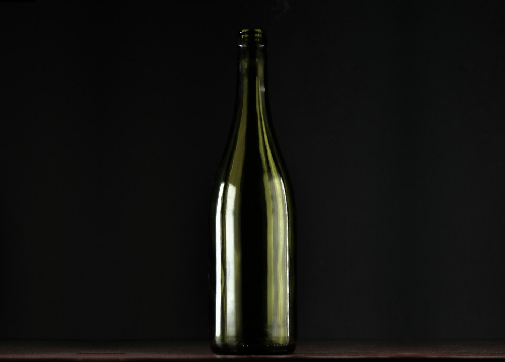

L'uva lavoradue volte.
Prima diventa vino. Poi le vinacce passano dall'alambicco, e diventano grappa. Stessa collina, stessa famiglia.
I vini
Dodici ettari attorno alla cantina, vendemmiati a mano.
- Rosso RiservaVentiquattro mesi in botte grande
- Bianco di collinaSolo acciaio, in bottiglia a marzo
- RosatoUna notte sulle bucce
I distillati
Le vinacce arrivano all'alambicco ancora fresche, il giorno della svinatura.
- Grappa di vinacceBianca, a bagnomaria
- Grappa riservaDiciotto mesi in rovere
- Acquavite d'uvaDal mosto intero, in poche bottiglie

Sotto la collina, quattordici gradi tutto l'anno.
La bottaia è scavata nel tufo. Qui il Riserva aspetta due inverni, e la grappa prende il colore del rovere.

La vigna
Filari esposti a sud-ovest, inerbiti, senza diserbo. In vendemmia si raccoglie al mattino, quando l'uva è ancora fresca.
12ettari, tutti attorno alla cantina
3generazioni, la quarta sta imparando
1alambicco discontinuo, a bagnomaria
Venite ad assaggiare.
- Visita e degustazione
- Un'ora e mezza tra vigna, bottaia e alambicco. Quattro assaggi, su prenotazione.
- Il giorno della distillazione
- A novembre si entra in distilleria mentre l'alambicco lavora.
- Ristoranti ed enoteche
- Listino e campionatura per chi vende: scriveteci.